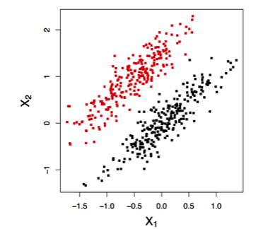

- Motivate and define the goals of Multivariate Pattern Analysis (MVPA)
- Demonstrate the consequences of confounding
- Inverse probability weighting to address confounding in MVPA
- Simulated and real data examples
Multivariate Pattern Analysis and Confounding in Neuroimaging
Kristin Linn
March 6, 2015
Roadmap
How does disease affect brain structure?
"Mass-univariate" approaches test for group differences at each voxel
- e.g., Statistical Parametric Mapping, Voxel-based morphometry

Multivariate Pattern Analysis (MVPA)
Any tool that can identify joint disease patterns across the brain.
- SVM
- Logistic regression
- Scalar on image regression
MVPA goals:
- Study structural patterns in the brain that characterize disease
- Develop image-based disease biomarkers
Support Vector Machine (SVM)


In neuroimaging each point is a brain, classes are cases/controls
http://docs.opencv.org/doc/tutorials/ml/introduction_to_svm/introduction_to_svm.html
MVPA using the SVM
The SVM returns a vector of weights, one per voxel/region
- Weights indicate relative contribution to the discrimative rule

Marginal vs Joint MVPA
Non-imaging variables can be informative about disease process
Investigators must decide whether or not to include non-image variables as features
We define Marginal MVPA to be any MVPA that uses only the image
We define Joint MVPA to be any MVPA that uses image and non-image variables
Confounding in Neuroimaging
A confounder is a non-image variable that affects both disease and image
- e.g., In Alzheimer's disease age is associated with diagnosis and atrophy
Recall the goals of MVPA:
- Study structural patterns in the brain that characterize disease
- Develop image-based disease biomarkers
It is important the analysis reflect the target MVPA goal!
- This talk focuses on Goal 1 with brief comments about Goal 2
Confounding and MVPA Goal 1
Goal: estimate the stuctural pattern that characterizes disease
- Ideally, observe each patient with and without disease
- In causal inference terms: want to see both potential outcomes
Several problems:
- Can't observe both potential outcomes
- Can't randomize disease
- Matching on all confounders may not be feasible
- Not addressing confounding may lead to a biased estimate of the disease pattern
Confounding Toy Example
Voxel-wise "adjustment"

Note:
- Both methods are "conditional" on A
- Changes interpretation of features, i.e., now joint with A
Inverse Probability Weighting

Inverse Probability Weighting

IPW-MVPA
Idea: perform MVPA in the pseudo-population created by IPW
Define \(W_{i} = I(D_{i}=1)\mbox{pr} (D_{i}=1 \mid {\boldsymbol A}_{i}) + I(D_{i}=0)\mbox{pr} (D_{i}=0 \mid {\boldsymbol A}_{i})\)
Weight each subject by \(W_{i}^{-1}\)
Usually IP weights are unknown and must be estimated
- Logistic regression: \[ \mbox{logit}[ \mbox{pr} (D=1 \mid {\boldsymbol A})] = \beta_{0} + \beta_{1}^{T}{\boldsymbol A} \]
- Obtain \(\widehat{W}_{i}\) by plugging in \[\widehat{\mbox{pr}} (D_{i}=1 \mid {\boldsymbol A}_{i}) = \widehat{\beta}_{0} + \widehat{\beta}_{1}^{T}{\boldsymbol A} \]
IPW-SVM
Soft-margin SVM
- Weight the slack variables \(\xi_{i}\) by IP weights
- Extension of class imbalance weighting

IPW-SVM in R
To our knowledge, no SVM package allows subject-level weights
- Approximate IPW-SVM:
- Estimate the IP weights and define \(\widehat{T}_{i}\) to be the estimated weight for subject \(i\) rounded to the nearest integer.
- Create a new dataset that contains \(\widehat{T}_{i}\) copies of subject \(i\)'s data vector, \((Y_{i}, X_{i}, A_{i})\).
- Train the SVM in the new dataset.
Simulations

- Generate 2,000 samples, save half for testing
- Learn SVM on 1,000 training samples to get "true" weights
- Take a biased subsample (n=200 per class) from the 1,000 training samples
- Compare methods on the biased subsample
Marginal MVPA Results
Joint MVPA Results

Joint MVPA Results
- \(X_{1} = 5 - 3D + \epsilon_{1}\)
- \(X_{2} = -3A - 4D + 3AD + \epsilon_{2}\)

Caveat
- Can't weight slack variables when the data are linearly separable!
- Data become more separable as \(p\) increases and are always perfectly linearly separable when \(p > n\).
Caveat

Current solution: PCA-IPW-SVM
- Estimate the IP weights and create the new dataset that contains subject-level copies
- Do PCA on the image features in the new dataset
- Train SVM on the first several PC scores
Results from ADNI data
- 137 ROI volumes
- Used an age-matched sample to estimate the "true" weights for classifying Alzheimer's vs. controls
- Performed PCA-IPW-SVM on a biased subsample of the full age-matched sample

Brief comment about MVPA Goal 2
Goal: develop image-based disease biomarkers
- "Confounders" can improve predictive performance
- Need knowledge of the population distribution to which the biomarker will be applied
- In machine learning this is called dataset shift, covariate shift, etc